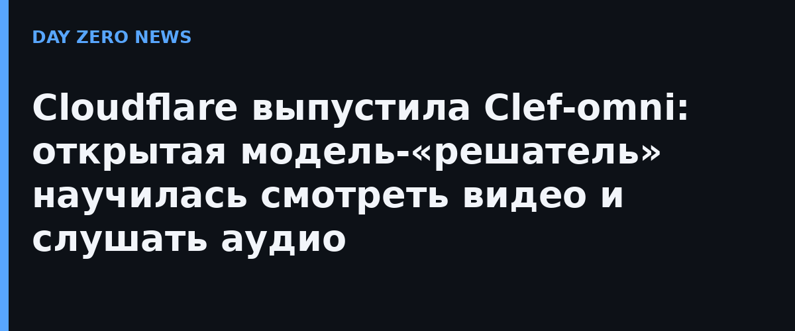

Cloudflare выпустила Clef-omni — мультимодальное пополнение в семействе открытых decision-моделей Clef. Новая модель принимает текст, изображения, аудио (wav, mp3) и полноценное видео (mp4, webm) в одном API-вызове. Веса опубликованы на Hugging Face, модель доступна в Workers AI и совместима с API конкурента Jev от TypeSafe — достаточно сменить идентификатор модели.
Clef-omni построена на базе Qwen3-Omni-30B-A3B-Instruct — это смесь экспертов (MoE) с 3 млрд активных параметров, но текстовая генерация и голосовой выход отрезаны. Модель не пишет текст: ей вместе с входными данными передают схему вопросов с допустимыми вариантами ответов, а она возвращает выбранные значения и уверенность по каждому полю. Из практики убирать каскады «транскрибация → разбор кадров → классификатор» — один вызов вместо конвейера.
По данным Cloudflare, медиана ответа на текстовый запрос — около 130 мс, с изображением — около 150 мс, аудиоклип обрабатывается за несколько сотен миллисекунд, а 21-секундное видео со звуком получает оценку примерно за 1,5 секунды. В бенчмарках Clef-omni набирает 98,2 балла в BFCL (точное совпадение кейсов) против 95,75 у Jev, 92,7% точности в API-Bank и 94,8 macro-F1 в BANKING77.
Одновременно Cloudflare срезала цену Clef-flash: ввод подешевел на 58% — с $0,09 до $0,038 за миллион токенов, вывод — $0,12. Плата за это — у хостинговой версии контекст урезан с 64k до 24k токенов (веса для самостоятельного хостинга, по заявлению компании, поддерживают 256k; по внутренней статистике, лишь 0,24% запросов превышают 24k). Саму модель Clef ускорили на уровне инфраструктуры обслуживания — переезд на SGLang, веса те же.
Внутри Cloudflare семейство Clef закрывает спам-тикеты в репозитории документации GitHub, модерирует плагины в EmDash на предмет фишинга, ищет персональные данные в потоках DLP и помогает threat intelligence отделу помечать вредоносные домены. Для агентских систем это показательный сдвиг: решения «какое поле выбрать» всё чаще отдают не большим LLM, а маленьким дешёвым моделям-классификаторам с гарантированной схемой ответа.
Отдельного официального анонса на русском языке нет; материал собран по официальному блогу Cloudflare и пересказу ITHome.